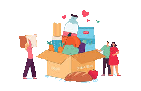

Share your food
Have extra food? Share its details, including the food type, quantity and pickup information.
Share more. Waste less.
Don't waste food. Share it with someone who needs it. We connect people with extra food to people looking for a meal, helping good food find a good purpose.

A little sharing goes a long way
Food waste is a growing problem, while many people struggle to access regular meals. Food Waste Loop makes sharing surplus food easier, quicker and more accessible.
Simple as 1, 2, 3
Good food can make a difference when we bring our community together.
Have extra food? Share its details, including the food type, quantity and pickup information.
People looking for food can explore available donations and find what they need.
Donors and receivers coordinate a suitable time and place for collection.
Be part of the change
Have extra food that is still safe to eat? Share it instead of throwing it away.
Donate nowSearch by your city or area to find community organisations supporting people nearby.
Our mission
Through sharing and community participation, we can create a more responsible and caring food system. A little sharing can make a big difference.
Join the Food Waste Loop